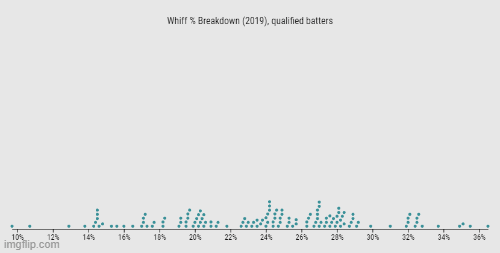

Good Pitching or Bad Hitting?
by A. Kline
Posted on 05/28/2021
The number of no-hitters thrown in a given season is inconsistent, but the closer you look, the more clear patterns become. If you look at the early-mid 2010s, when pitchers generally had the upper hand, six no-hitters were thrown in 2010, seven in 2012, and the same number again in 2015. When home runs numbers began to spike, this pattern quickly reversed, and 2016 and 2017 both had only one no-hitter apiece. Equilibrium was reached soon after this, however—2018 had three and 2019 had four such games, much more typical numbers for one season.
And then there’s 2021. In less than two months of play, six no-hitters have been thrown—the same number as 2010, a fairly pitcher-friendly season that saw two perfect games—and this number will almost certainly increase as the season goes on. Perhaps even more shockingly, this is more than the five no-hitters thrown in 1968—a year often touted as the Year of the Pitcher—and we’re not even three months into the season.
Of course, the number of no-hitters thrown in a season is nowhere near the best way to determine the extent to which pitchers are successful, but it certainly tells part of the story. We have also seen offensive juggernauts like the Yankees unable to put runs up on the board despite the fact that they are clearly talented enough to do so. Clearly, something is going on this season, and whatever it is, pitchers are the biggest beneficiaries.
While the number of runs scored per team per game so far this season is closer to the average value for the past decade, its 0.25-run decrease from 2020 is the largest single-season drop since 2001. (Data from Baseball-Reference.com)
It’s easy enough to point to the data above, say pitchers are having quite a year, and then call it a day. It’s more challenging, however, to pinpoint exactly why this is happening. There are two real possibilities here: either pitchers are pitching better than they used to, or hitters are hitting worse than they used to. Of course, we expect better pitching to result in worse hitting, but worse hitting may also arise even if pitching has not improved.
So how can we determine which is the cause? Well, first we need to understand what is indicative of a pitcher’s skill and what is indicative of a hitter’s skill. Obviously a worse pitcher would be more likely to allow batters more success, but in order to get the best idea of pitcher skill, we should eliminate hitters from the equation entirely. This leaves us with metrics like pitch type percentages and spin rate that we can use to determine if pitchers have improved their craft this season.
We should also be looking at more skills-based and less results-based metrics when evaluating hitters, ideally ones that eliminate outcome entirely, such as barrel percentage and whiff percentage. As stated previously, these numbers will be affected by any change in pitcher skill, but they can still change even if pitcher skill stays constant, allowing us to figure out which side of the coin is most responsible for what we are seeing this season.
First, let’s see what’s different this season about the way pitchers are pitching.
This beeswarm graph from Baseball Savant shows that fastballs, as a percentage of all pitches thrown, have risen in average frequency from 2019 to 2021. I know, I wish the X axis could have been consistent as well. Thank Baseball Savant for that.
Interestingly, pitchers seem to be throwing more fastballs this year than they did two years ago. In 2019, the average fastball percentage was in the low-to-mid 50s, but now it’s almost 60. Obviously there is a difference in sample size between the two seasons, but that smaller sample size is literally all we have to work with. This shift in frequency may seem small, but remember that this is a league-wide trend. As such, this is most likely not just chance at play here. So is there any reason why pitchers might be relying more on their fastball this season?
This beeswarm graph from Baseball Savant shows that the average spin rate for fastballs in rotations per minute (RPM) has risen from 2019 to 2021 on average. Still nothing I can do about that X axis unfortunately.
That might be it. In 2019, the league-wide average spin rate appears to fall between 2200 and 2300 RPM. This season, the largest peak is clustered around 2400 RPM, and the average is likely in excess of 2300. So we now know that pitchers, as a result of their increased spin rate that has no clear cause whatsoever*, feel more comfortable throwing more of their fastballs. But how does this affect hitters?
If a fastball has a high spin rate, it appears to the batter to “rise” instead of fall, making it more difficult to hit. This means we should expect a higher spin rate for pitchers to correlate with lower quality contact and more swings and misses from hitters. Let’s look at the numbers to see if this is the case.
This last beeswarm graph shows how the whiff (swing and miss) percentage for batters has changed from 2019 to 2021.
Admittedly, the whiff rate has not changed much this season compared to two years ago. However, there is a larger cluster of players with whiff rates north of 30 percent than there was two years ago, indicating that pitchers are seeing their success with at least some batters. What is interesting is that despite this change in whiff rate, barrel percentage for hitters has gone up on average, and there appears to be no difference when it comes to sweet spot percentage—perhaps because hitters are simply making better contact with the fewer balls they do make contact with.
Of course, this all merely speculation, but that does not mean we are barred from making an educated guess as to why pitchers are having quite a year. It’s entirely possible that the six no-hitters so far this season are a freak occurrence that simply resulted from chance, not pitchers getting objectively better. After all, random ebbs and flows for things like these are nothing new to baseball.
So is what we’re seeing this season the result of superior pitching or inferior hitting? Well, we’re certainly seeing improved pitching, as pitchers feel more comfortable throwing more fastballs with greater spin. When it comes to hitters, however, the argument that they have gotten worse is harder to make. On one hand, they seem to be swinging and missing more—but they also seem to be making contact at the same level, if not even better, than they were before. At the end of the day, pitching and hitting are not diametrically opposed; they are about as interdependent as two things can get. As stated earlier, we would expect an improvement in pitching to be followed with worse hitting—but we’re not necessarily seeing that. However, hitting can get worse even if pitching does not improve—but we’re not exactly seeing that either.
So like many of these supposedly binary questions, the answer seems to be somewhere in between.
*But in all seriousness, the rise in spin rate is not new—it’s been on the rise for years due in no small part to sabermetrics emphasizing it so much—and would likely still be high regardless of foreign substance use.